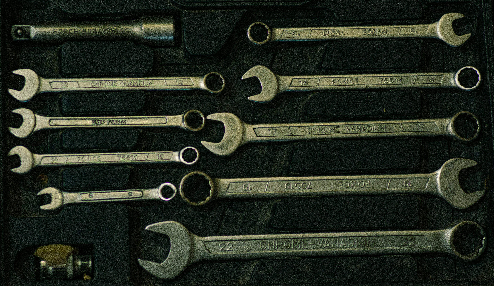
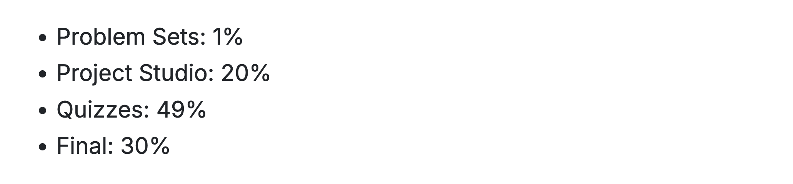

Functions
Writing Your Own Tools
Last Time
- Use comparison operators to compare two values.
- if-then runs code only when a condition is
TRUE. - if-else chooses between two blocks of code based on condition.
- A for loop repeats code for each element of a vector.
ifelse()is a vectorized if-else.
Key Ideas for Today
- A function bundles code into a reusable tool.
- Functions created with
function(), saved as objects. - Arguments make it flexible; defaults make it quick.
- The last expression is returned (or use
return()). - Scoping determines where a function looks for objects.
A question to ponder . . .
What will the following code return?
Defining a Function
Ex. colSums()
I could generalize with a for-loop.
[1] 3 7Why use colSums() instead?
- Make your code more readable
- Don’t Repeat Yourself (DRY)
- Focus on the variables, not the constants
- Easier to test, update

Many individual functions = wrench set
Custom function = socket wrench set.
Building a function
Building a function
Building a function
- Create a new function with
function() - Define the function name, arguments, and expression
- Creates a new object,
c_to_f()in your environment - Last line will be returned (or use
return())
Guess the Metaphor
A function is a like a mill: arguments go in, return value comes out (flour). The hidden machinery does the work.
Scoping
Question: What will the following code return?
[1] 1 2[1] 2 1- The environment within the function includes the environment “one level up”
- Objects defined in the function environment mask those one level up
- Best to encapsulate functions (not make them dependent on objects defined outside their environment / arguments)
Building a Die Roller
Roll a Die
Task: return a numeric vector with the result of rolling a fair six-sided die.
Roll a Die
Task: return a numeric vector with the result of rolling a fair six-sided die.
Question: Modify this function so it can
- work for arbitrary n-sided dice
- return more than 1 roll of the die
02:00
Roll a Die
Task: return a numeric vector with the result of rolling a fair six-sided die.
Question: Modify this function so it can
- work for arbitrary n-sided dice
- return more than 1 roll of the die
Roll a Die
Task: return a numeric vector with the result of rolling a fair six-sided die.
Question: Modify this function so it can
- work for arbitrary n-sided dice
- return more than 1 roll of the die
Building a Grade Calculator
Your Turn

Write a function called course_grade() that takes assignment scores as inputs as outputs your current grade in the course.
02:30
What if the weighting scheme were different?
Add flexibility through arguments.
What if we have no final_exam grade yet?
Save typing and head off errors by setting defaults.
How else can we generalize this function for other policies?
Why write functions?
- Make your code more readable
- Don’t Repeat Yourself (DRY)
- Focus on the variables, not the constants
- Easier to test, update
Key Ideas for Today
- A function bundles code into a reusable tool.
- Functions created with
function(), saved as objects. - Arguments make it flexible; defaults make it quick.
- The last expression is returned (or use
return()). - Scoping determines where a function looks for objects.
For Next Time
- Sign up for Quiz 2 on PrairieTest.
- Work through the functions questions on the problem set.
- Come to Project Studio 1 this week.